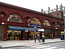

the free encyclopedia that anyone can edit.
4,352,940 articles in English
|
From today's featured article
 The Great Northern, Piccadilly and Brompton Railway (GNP&BR) was a railway company that constructed the deep-level underground railway that is now the core central section of London's Piccadilly line. The GNP&BR, formed in 1902 through a merger of two older companies, was a subsidiary of the Underground Electric Railways Company of London (UERL). A number of different routes were planned, but most were rejected by Parliament. When it opened in 1906, the GNP&BR's line served 22 stations (Russell Square pictured) and ran for 14.17 kilometres (8.80 mi) between its western terminus at Hammersmith and its northern terminus at Finsbury Park. A short branch connected Holborn to the Strand. Most of the route was in a pair of tunnels, with 1.1 kilometres (0.68 mi) at the western end above ground. Within a year of opening it became apparent to the management and investors that the estimated passenger numbers for the GNP&BR and the other UERL lines were over-optimistic. Despite improved integration and cooperation with the other tube railways, the GNP&BR struggled financially, and in 1933 it and the rest of the UERL were taken into public ownership. (Full article...) Recently featured: Herrerasaurus – Lê Quang Tung – Blue-faced Honeyeater Archive – By email – More featured articles...
Did you know...
From Wikipedia's new and recently improved content:
Archive – Start a new article – Nominate an article |
In the news
On this day...

October 18: Feast day of Saint Luke; Alaska Day (1867)
More anniversaries: October 17 – October 18 – October 19 Archive – By email – List of historical anniversaries It is now October 18, 2013 (UTC) – Reload this page |
|---|
|
{kind=link}
{kind=link}
Wikipedia's sister projects
Wikipedia is hosted by the Wikimedia Foundation, a non-profit organization that also hosts a range of other projects:
| Commons Free media repository |
MediaWiki Wiki software development |
Meta-Wiki Wikimedia project coordination |
|||
| Wikibooks Free textbooks and manuals |
Wikidata Free knowledge base |
Wikinews Free-content news |
|||
| Wikiquote Collection of quotations |
Wikisource Free-content library |
Wikispecies Directory of species |
|||
| Wikiversity Free learning materials and activities |
Wikivoyage Free travel guide |
Wiktionary Dictionary and thesaurus |